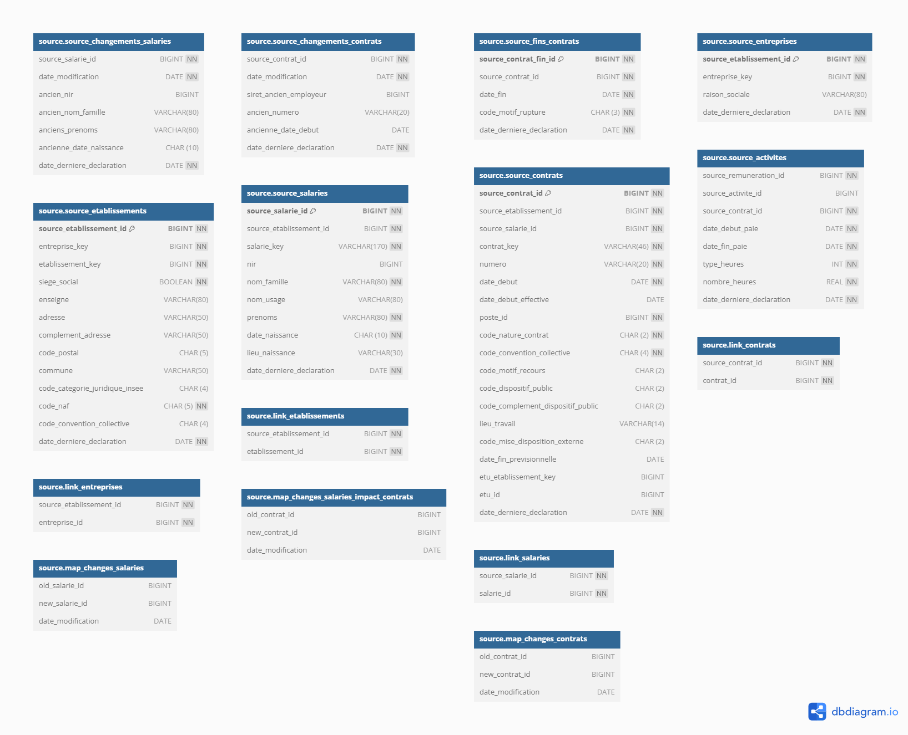

Diagrammes des différents schémas au sein des bases de données
Les diagrammes ont été générés avec l’outil dbdiagram.
Schéma public

Plus d’informations, ici.
Schémas sys et log
Plus d’informations, ici.
Schéma source

Plus d’informations, ici.
Schéma raw

Plus d’informations, ici.
Schéma test

Plus d’informations, ici.
Schéma anonymous

Plus d’informations, ici.